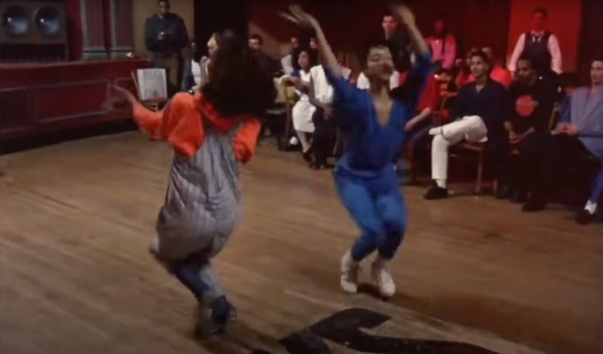

* Marika Cifor, “Presence, Absence, and Victoria’s Hair: Examining Affect and Embodiment in Trans Archives,” Transgender Studies Quarterly, Vol. 2, No. 4 (2015), p. 648.

Paris Is Burning (dir. Jennie Livingston, 1990)
SCHEDULE
- 10am /// Meet at Briscoe Center
- 10am–11:15am /// IN THE ARCHIVE—a prompt for an encounter
- 11:20am–11:40am /// WALK TO ART
- 11:45am–1pm /// AWAY FROM THE ARCHIVE—a prompt for the future
Participants will need—
- Camera (mobile device is good)
- Laptop computer with ability to edit/print photos from your device; Adobe CS (optional)

Tourmaline, Salacia (still), 2019, appearing in “Venus In Two Acts,” Saidiya V. Hartman (Cassandra Press), 2021.
Optional reading: Saidiya V. Hartman, “Venus In Two Acts,” (2008)
Thoughts and questions from Hartman for consideration (audio of Hartman speaking about “Venus In Two Acts”)—
From “Venus In Two Acts,”—

Amazon Quarterly, 1972–1975.
Artifacts from these Briscoe collections have been pulled for this workshop, focusing on local civil rights and LGBTQ+ culture and history—
- Lesbian Issues collection, including Moonstorm (1973–1980), published by the Lesbian Alliance of St Louis, MO (inspiring this font by Nat Pyper) Amazon Quarterly (1972–1975), Oakland, CA / Somerville, MA, featuring Audre Lorde’s work (she was also the poetry editor for some of the issues)
- AIDS collection
- Juanita Jewel Shanks Craft collection
- Texas Human Rights Foundation Records
- UT Gender and Sexuality Center Records
Things that weren’t pulled that might be interesting to explore in the future—
- Frieda Werden Papers
- Lesbian/Gay Rights Lobby of Texas records
- Pat Cramer Papers
- Glen Maxey Papers
- Barbara Duke Collection
- Approach this gathering of artifacts that has been assembled for you, specific to this particular time and place;
- Notice where your interest goes, and what captures your attention (a word, an image, a page, a name, a shape, a texture);
- Spend time with the artifacts that speak to you;
- Select one or more artifacts and attune to them (commit time and attention);
- Document your artifact(s): by hand, or not—by drawing, by photographing, scanning, recreating (use software if you like, etc.);
- Try to understand your artifact(s) and take notes:
—Who created it?
—Who was its intended audience?
—How was it made? where was it made?
—How did it get to this archive?
—What is its place in time?
—What else might you learn about its context—the political and social conditions or anything else about its place in history, within this archive, on other timelines, etc.?
- Print your documentation on one or more 11 x 17 sheets of paper;
- Consider—
—Why do you want to share this particular thing?
—How do you bring this artifact into this present moment?
—How might you take it into the future? - Transform your documentation with annotations—
—Details and context that you discover in your research;
—Your own thoughts, ideas;
—Personal associations;
—Creative writing;
—Drawings, other images;
—Other research, connections, materials, etc.
—Go as far as you want in the transformation process; - Your transformation—can happen on your computer (Illustrator, InDesign, etc) or,
- Print out your documentation and hand-annotate;
—with drawings;
—hand-lettering;
—handwriting;
—collage, etc. - By the end of the session, collect all of the materials for display;
- Our new collection could be assembled into a publication, zine, copies, prints, etc and distributed to all participants (optional, outside of workshop).
Juanita J. Craft
Lesbian Issues
Beginning in the late 1960s and 1970s, a number of social movements began to organize, such as the Women’s Rights Movement and the Gay Liberation movement. The Women’s Rights movement aims to achieve freedoms and entitlements for women and girls, along with equal rights for women and men. Gay Liberation and other lesbian, gay, bisexual and transgender (LGBT) social movements aim for the social acceptance of sexual and gender minorities, and for gays and lesbians to come out to their families and friends and participate in gay pride activities.
Rita Mae Brown (born November 28, 1944) is an American writer and political activist in the American Civil Rights Movement, the anti-war movement, the Gay Liberation movement, and the feminist movement. She is the bestselling author of a number of novels, most famously Rubyfruit Jungle (1973), and has also written autobiographies, a cookbook, and screenplays.
AIDS Collection
The AIDS Collection, 1985-1990, contains flyers, news clippings, medical studies, and guidelines, which document the work of and issues confronting AIDS organizations in Arkansas and Texas, specifically the Austin Lesbian Gay Political Caucus, AIDS Services of Austin, Austin AIDS Project, Washington County AIDS Task Force, Inc., Arkansas AIDS Foundation, and AIDS Resources Center. The flyers discuss events and marches, fundraising, and awareness, and periodicals concern education, outreach, and organizations. News stories relate to public policies, events, and homophobic acts, while medical studies describe the disease, infection rates, and fatality rates. Printed guidelines provide strategies for discussion of HIV/AIDS in schools and at home. Furthermore, the collection addresses counseling and outreach efforts of the AIDS organizations.
Juanita J. Craft
Juanita Craft (1902-1985) is known for her lifelong work in support of education, civil rights, and the NAACP. Born Juanita Jewel Shanks in Round Rock, Texas, on February 9, 1902, she grew up in Austin. She attended Prairie View State Normal and Industrial College where she earned a certificate in dressmaking and millinery in 1921. She arrived in Dallas in 1925 and worked as a bellmaid at the Adolphus Hotel. In 1935 she joined the NAACP and became increasingly involved in its civil rights activities. On October 2, 1937, she married Johnny Edward Craft, a union that lasted until his death on January 17, 1950. They had no children. During World War II, Craft was appointed Dallas NAACP membership chairman and, in 1946, became Texas field organizer and Dallas Youth Advisor.
In addition, Juanita Craft served in the Dallas Democratic party for twenty-three years as precinct chairman. She was the first Black woman deputized to sell poll tax certificates in Texas. She supported herself by means of a millinery shop in her home while working with the Dallas Youth Council. Through nonviolent demonstration, the Youth Council helped to successfully challenge segregation in restaurants, lunch counters, and theaters, at North Texas State University, and at the Texas State Fair. Other programs included the "Back to School" drive in the early 1960s, the Kids Kan Kampaign neighborhood cleanup in 1965, and annual NAACP convention trips in which she accompanied teenagers.
Craft received Dallas’ highest civic honor, the Linz Award, in 1967 for investigating, exposing, and legislating against fraudulent trade schools which had cheated many unsuspecting young people in Texas. In 1975, at the age of seventy-two, Juanita Craft won a seat on the Dallas City Council for District 6 and was re-elected in 1977. Many civic and political honors have been bestowed upon her and three times she was summoned to the White House to receive awards. The Juanita Jewel Craft Recreation Center and Park, constructed and opened in 1974 in the heart of Dallas, stands as a living testament to her lifelong work for Dallas youth and residents.
The Crisis
The Crisis is the official magazine of the National Association for the Advancement of Colored People (NAACP). It was founded in 1910 by W. E. B. Du Bois (editor), Oswald Garrison Villard, J. Max Barber, Charles Edward Russell, Kelly Miller, William Stanley Braithwaite, and Mary Dunlop Maclean. The Crisis has been in continuous print since 1910, and it is the oldest Black-oriented magazine in the world. Today, The Crisis is “a quarterly journal of civil rights, history, politics and culture and seeks to educate and challenge its readers about issues that continue to plague African Americans and other communities of color.”
Moonstorm
The Lesbian Alliance of St. Louis was a non-profit organization founded in 1972 by Laura Ann Moore, a civil rights and community activist, dedicated to promoting Feminist-Lesbian rights and creating a community for all women. Although the majority of the group’s members identified as Lesbian, non-Lesbian women also comprised its membership. The Lesbian Alliance held meetings (monthly and sometimes weekly) in the Women’s Coffeehouse, which the group founded in 1974 in A Women’s Place. A Women’s Place was a women’s center operated by and for all women, but primarily Lesbian-Feminists located in St. Louis, Missouri, at the corner of Miami and Louisiana Streets. Alongside the Women’s Coffeehouse, the center also housed a library-lounge area, recreation room, support groups for women in transition, and a legal office for research and assistance. The Lesbian Alliance of St. Louis organized meetings that included study groups on various women’s topics, such as Feminism and Lesbianism, a variety of workshops focused on women and their lives, entertainment including women-oriented films, and discussions with other St. Louis women’s groups. The Coffeehouse was the primary meeting location of the Lesbian Alliance until January 30, 1975, when an arsonist firebombed the building. Afterwards, the group continued to meet in various St. Louis community spaces.
The Lesbian Alliance published a semi-regular magazine and newsletter called Moonstorm. The name of this publication came from the Moon’s historical connection to womanhood and femininity, as well as its connections to darkness and evil from the patriarchal perspective. The Lesbian Alliance of St. Louis named the publication Moonstorm to reclaim the feminine connections to the moon and to reject the patriarchal views of women and Lesbians in their current society. Moonstorm included, but was not limited to, articles covering current events, politics, social activities, philosophy, and personal stories. The Lesbian Alliance of St. Louis disbanded sometime in the late 1970s, while Moonstorm continued to publish up until the early 1980s.
Amazon Quarterly
As compiled by Tirza True Latimer, the roster of Amazon Quarterly contributors included Rita Mae Brown, who published excerpts of her pathbreaking lesbian novel Ruby Fruit Jungle in the magazine prior to its publication by Daughters, Inc.; Judy Grahn, who first published her epic poem “A Woman is Talking to Death” in Amazon Quarterly; June Arnold, who introduced her classic The Cook and the Carpenter in the magazine; along with works by Elana Nachman (later Dykewomon), Jane Rule, Alix Dobkin, Adrienne Rich, and Audre Lorde, who was poetry editor for the final four issues of the magazine’s run.
In addition to these luminaries of feminist writing, Amazon Quarterly published work by visual artists and photographers, a commitment to aesthetics also reflected by its stylish layout. The editors expanded the magazine beyond the traditional scope of an arts journal, committing a double issue to documenting the lives of its readership around the country, traveling to several dozen locales to interview individual readers. The wide range of work Amazon Quarterly published made it a major force in the project of cohering a lesbian-feminist public that transcended a particular genre or sphere of cultural production.
Amazon Quarterly is also notable for its explicit political commitment to the proliferation of an alternative lesbian-feminist print culture and audience by fortifying the networks and circuits of lesbian cultural production. Pre-figuring the DIY ethos of riot grrl feminism, the magazine published guides for printing one’s own magazine along with expansive listings of lesbian organizations and publications, refused to run ads, and operated on a shoestring budget that relied on volunteer labor from its audience.
The Texas Human Rights Foundation
The Texas Human Rights Foundation, Inc. (THRF), formerly known as the Houston Human Rights Defense Foundation, Inc. is a nonprofit foundation established on June 6, 1978. THRF’s purpose is to end discrimination based on sexual orientation or HIV status through litigation, education, and legal assistance. THRF sponsors and supports litigation, publishes booklets and newsletters, and holds events that inform Texans of their legal rights. THRF also has hotlines and an attorney referral program in order to inform and supply legal counsel to those in need.
Frieda Werden
American and Canadian radio personality Frieda Lindfield Werden was born Linda Catherine Samfield in Austin, Texas, in 1947, and married Noble Horace Dunson, Jr., in 1968. After divorcing Dunson in 1972, she changed her name to Frieda Lindfield Werden. In 1986, she co-founded the radio production company WINGS: Women’s International News Gathering Service. Werden immigrated to Canada in 2002 and three years later, she was elected president of the International Association of Women in Radio and Television. She also served on the International Board of Directors of the World Association of Community Radio Broadcasters (AMARC) and won a Lifetime Achievement Award from the National Campus and Community Radio Association of Canada (2006).
Pat Cramer
Pat Cramer (1949-2021) was born in Seattle, Washington. She graduated from the University of Texas at Austin in 1977 with a B.S. degree in nursing. As a driver for the UT shuttle bus system, she went on strike for union recognition in 1974. Cramer founded the Austin Lesbian/Gay Political Caucus, and in 1982, she led a coalition to defeat an Austin anti-gay housing proposition. She was a plaintiff in Morales et al. v. State (1989), which challenged the constitutionality of criminalizing so-called "sexually deviant intercourse."
Cramer served for 20 years at the Travis County Tax Office. She worked on numerous projects supporting political equality, volunteering for numerous organizations and individuals over the years, including Meals on Wheels, Adult Protective Services, Services for the Elderly, and the National Association for the Mentally Ill.
The Lesbian/Gay Rights Lobby of Texas
The Lesbian/Gay Rights Lobby of Texas was founded in 1982 as the Lesbian/Gay Rights Advocates, which itself was formed from a meeting of members of the Lesbian/Gay Democrats of Texas and the Texas Gay Task Force. Since 2005 the LGRL has been known as Equality Texas. Equality Texas is a statewide political group dedicated to fighting for the cause of equality in Texas.
Glen Maxey
A native of Baytown, Texas, Glen Maxey (born 1952) received his bachelor’s degree in Social Rehabilitation and Social Services and his master’s in Elementary Education and Clinical Reading, both from Sam Houston State University. Following his graduation, Maxey worked as a fifth-grade teacher in Navasota, Texas, as well as a legislative aide for two senators. After working in several local and state political campaigns, he was appointed the executive director of the Lesbian/Gay Rights Lobby of Texas. Additionally, he established the AIDS Services in Austin.
In 1991, Maxey was elected to the Texas House of Representatives for District 51, southeast Travis County. In addition to serving in this position for five terms, he has also been a member of the Public Health Committee and Vice-Chair of the Human Services Committee. Maxey has remained involved in public health issues, especially those pertaining to children’s health insurance and accessibility to information about physicians.
Barbara M. Duke
Barbara M. Duke was active in the National Organization for Women, Inc., the Texas State National Organization for Women, and the Austin Chapter of the National Organization for Women during the 1970s and 1980s. Additionally, Duke worked for and with the Center for Battered Women in Austin, the Austin Networker, and Women in Communications, Inc.